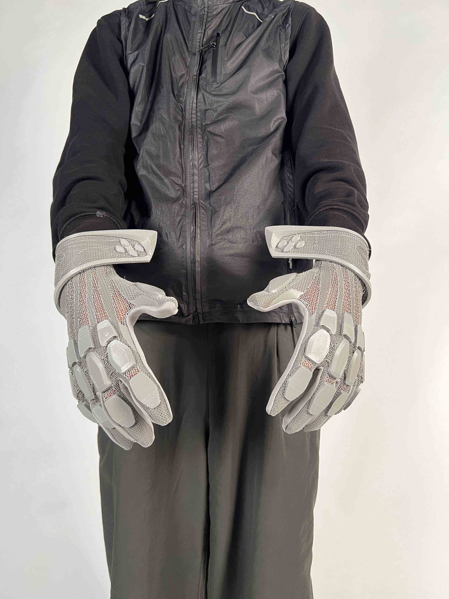

PRINTED KNIT
IN PROGRESS...
>TPU filament
Using infill structures automatically generated by slicer software to create a knit-like material that has many new features such as shore hardness variability, ventilation, protection and a distinctive aesthetic. Depending on the infill density, this knitted structure can be entirely transparent or completely sealed, offering a diverse range of possibilities.
During this particular project I was experimenting with different flexibility of the knit in relation to hand anatomy and gloves. 3D printed knit was also used in collaboration with Copeo Studio to create unique filtration patterns on the Body bag project.
